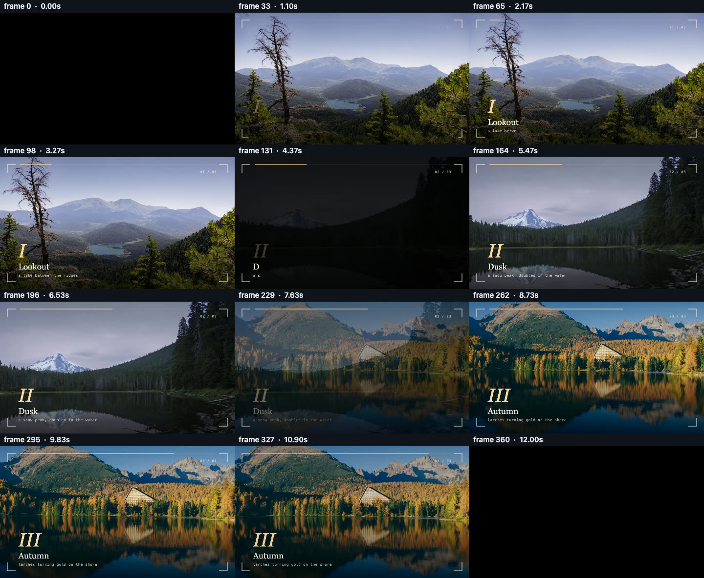
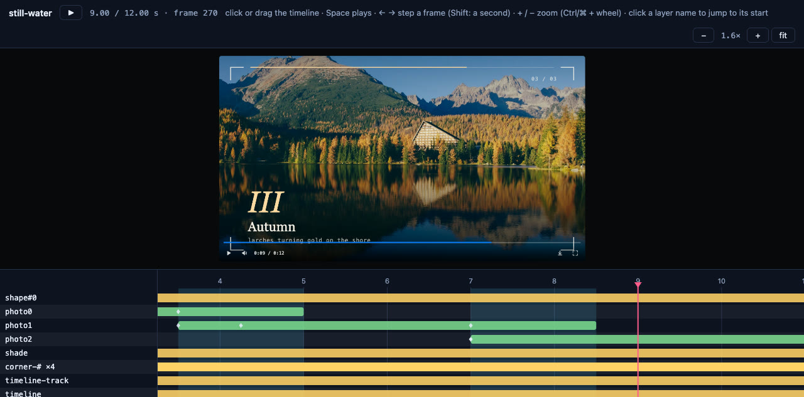

Working with an AI
How to have an AI write a video, what it reads first, and how it checks its own work.
pixi-effects was designed so that an AI can write the whole video as one HTML file and verify it without watching it. This page is the workflow.
1. Give the AI the skill#
An AI does best when it reads a short, exact description of the format before it writes anything:
| File | What it is |
|---|---|
skills/pixi-effects/SKILL.md |
the workflow: write, check, look, fix. Point a coding agent at it first |
skills/pixi-effects/reference/cheatsheet.md |
every layer type, property, unit and rule on a few pages |
skills/pixi-effects/reference/recipes.md |
tested recipes the AI can adapt |
skills/pixi-effects/reference/pitfalls.md |
the mistakes that were actually made, so they are not repeated |
skills/pixi-effects/template.html |
a starter page: a harness that collects every warning into window.__logs, and window.movie / window.__ready for tools |
llms.txt and llms-full.txt |
the same material in one file, for a chat window |
Register it as a skill, one command: npx skills add yjmtmtk/pixi-effects (Claude Code, Codex, Cursor, Gemini CLI, Copilot, OpenCode and more; npx skills update keeps it current). In Claude Code: /plugin install pixi-effects --marketplace yjmtmtk/pixi-effects. The agent then uses it whenever you ask for a video, with no need to name the library.
If the package is installed, the same files are in node_modules/pixi-effects/skills/pixi-effects/ (the chat guide is in node_modules/pixi-effects/ai/).
No shell? A chat is enough#
If you only have a chat in the browser (ChatGPT, Claude), paste this and open the file it gives you:
Read https://raw.githubusercontent.com/yjmtmtk/pixi-effects/main/ai/CHAT.md and follow it. Make a 10-second 1280×720 title video for … Give me the whole HTML file.
The starter page loads everything from one CDN, shows any warning in a red box with a Copy button (paste it back to the chat and it fixes it), and has the download button for the MP4. If the chat's preview stays blank, save the file as video.html and open it in a browser. The checks below need a shell, so a chat skips them.
If your browser has an AI agent that can use WebMCP tools, open the Playground instead: the agent writes the video, runs it, reads what is wrong and looks at it by itself, with no red box to paste back.
2. Ask for a video, not for code#
A prompt that works is specific about what you see and hear, and says what to read:
Read
skills/pixi-effects/SKILL.mdand follow it. Make a 12-second, 1280×720 title sequence for a bakery called "Rye & Sons": a warm cream background, the name typed out, a line that draws itself under it, a soft chime at the end. Save it asbakery.html. Run the check and fix everything it reports, then show me the contact sheet.
For a talk, ask for pages: "Make a five-page deck with deck(), one idea per page, bullets that appear one step at a time as stops, a slide transition between pages, and speaker notes. Then run the check and look at stops.png." For visuals that follow music, ask for audioEnvelope() and react() (the AI analyses the file before init). See Presenting and Audio.
Useful things to say: the size and duration, the moment that should be the poster (the picture before play), the palette (two or three colours), what appears when, what you hear, and "use only system fonts and generated shapes" if you have no assets.
3. The AI checks its own work#
This is the part that makes it practical. The AI runs one command and reads the result:
npx pixi-effects check bakery.htmlIt reports warnings, layout problems, sound problems and a real export; writes a contact sheet the AI can look at; and exits 0 or 1. The AI loops: write, check, look, fix. See Reviewing your video for what each line means.

4. You look at it, scrubbing a timeline#
When the AI says it is done, you open it:
npx pixi-effects view bakery.htmlYou get the page with a timeline under it. It is also the best way to give feedback: "the line under the title starts too early: it begins at 0.2 s, move it to where the typing ends" is easy to say when you can see the bars. Ask the AI to give layers meaningful names so the rows are readable.

5. Get the file#
npx pixi-effects render bakery.html -o bakery.mp4Why this works#
- One format. A video is a tree of plain objects; there is nothing hidden in a project file, so the AI sees everything it made.
- Mistakes are loud. An unknown option, a keyframe outside its layer, a text style typo: each prints a warning that says what to change (and "did you mean"), and the template collects them in
window.__logs. - Verification is built in. The checks are part of the library (
movie.inspect,inspectAudio,contactSheet,timelineData), not an external test rig. - Determinism. The same data renders the same video, so a fix is a re-run, and a seeded random number is the same every time.
Tips#
- Ask for named layers (
name: 'title') and a short comment per scene: it makes both the timeline and the AI's next edit easier. - Ask the AI to keep sizes and times in constants at the top of the file (
const DURATION = 12). - If a result is off, send the AI the contact sheet and the check output, not a description.
- For a deck, ask the AI to send
stops.png(the check writes it: one picture per stop, in order) rather than the contact sheet: it shows what the audience sees at every pause. - One piece, one HTML file: small enough to read in one go, and to version.